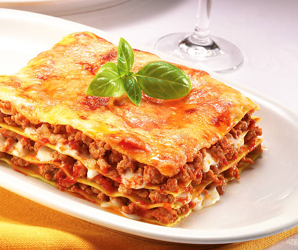

Lasagna Recipe

Lasagna is a stable dish for members of the mafia. The dumb fat Guido's love the stuff.
The ancient Romans loved to eat putrid rotting fish. Luckily
today Italian cuisine os not as terrible as that of their ancestors.
I love lasagna. Also, Garfield the Cat loved lasagna I hear.
And as we all know hearsay is the only evidence we need. Am I right?